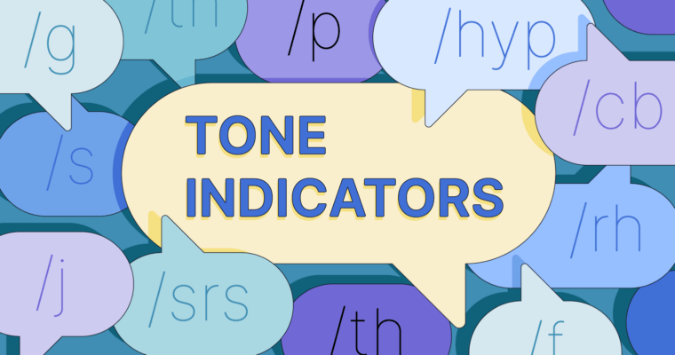

Project 1
Projects have been built the same way for decades. Salespeople and project managers have spent a lot of time and resources building complex projects, creating project proposals based on guesses, instead of ensuring accuracy through models that encapsulate best practices. Now is the time to improve the process of project inception and implement a solution that will increase speed and agility, while at the same time enhancing project governance, a standardized approach to the management of processes and data.
Project 2
This is a puzzle game, your task is to avoid hazards, collect coins and reach the finish line!

Project 3
Have you ever accidentally offended someone over text message? It happens. Unlike in speech, tone can be hard to convey and detect in written communication. Once you hit send, it’s up to the recipient to interpret your tone. This is where tone indicators come into play. Tone indicators are simple symbols or letter combinations that show what sentiment a message is meant to express. Tone indicators are used when communicating over text message and in chat rooms, forums, dating apps, and other platforms. If you’ve never used tone indicators before, keeping track of them can be difficult. Here, we’ve gathered the most popular tone indicators into a handy guide for understanding and using them effectively.
